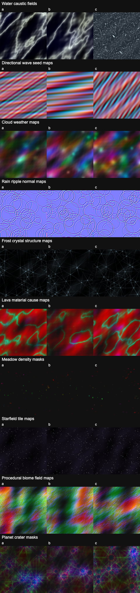

Skill Pack / Procedural Content / Procedural Materials
Author production WebGPU/TSL procedural materials in Three.js. Use for NodeMaterial PBR identity fields, atlas and triplanar filtering, specular AA, planet-space material fields, terrain wetness, lava and hot emissive procedural surfaces, raymarched material fields, per-instance dissolve, derivative normals, and authored physical response bundles.
Evidence frames produced by this skill's validation contract.

Shipped inside the skill folder — each is a working WebGPU/TSL scene or harness you can run and screenshot.
The complete SKILL.md as loaded by agents — verbatim, rendered.
Build procedural materials as WebGPURenderer + TSL + NodeMaterial graphs.
The only production lane is a MeshStandardNodeMaterial or
MeshPhysicalNodeMaterial whose node slots preserve Three.js lighting,
environment, shadow, transmission, clearcoat, sheen, anisotropy, and output
upgrades while replacing only the material causes.
Legacy WebGL implementation (deprecated, do not extend): examples/lava-flow-surface/lava-surface.js.
Use $threejs-choose-skills preflight for scenes that also need atmosphere,
clouds, oceans, shadows, post, or validation ownership.
Algorithm class dominates material throughput. Start from one shared TSL cause graph, not from independent texture/noise calls per PBR channel:
stable coordinates
-> structural fields
-> material identity weights
-> causal modifiers
-> filtered microstructure
-> derivative normals and specular AA
-> NodeMaterial PBR slots
-> node post/output
Texture-space/decoupled shading is a considered alternative, not the default specular-stability path; read the image-pipeline note before replacing derivative normals, specular AA, or TRAA with cached radiance.
The target graph writes:
colorNode from linear authored identity colors or SRGBColorSpace color
textures sampled through TSL.roughnessNode, metalnessNode, aoNode, opacityNode, and physical slots
from the same identity weights.normalNode from normalMap(), bumpMap(texture(...)) for texture height
maps, or a derivative normal built from scalar procedural height using
dFdx(), dFdy(), and fwidth().emissiveNode only for actual material emission; route glow through
$threejs-bloom and BloomNode in the node render pipeline.positionNode, castShadowPositionNode, and
receivedShadowPositionNode when material displacement must match visible
and shadowed geometry.maskNode, alphaTestNode, castShadowNode, or maskShadowNode for
dissolve and cutout behavior, driven by the same instance fields.Read references/procedural-pbr-system.md for the WebGPU/TSL material system, quality tiers, budgets, atlas/triplanar costs, derivative normals, specular AA, planet fields, wetness, emissive ownership, per-instance dissolve, and validation.
Canonical walnut, antique-gold, ebony, and lava TSL example: examples/tsl-procedural-pbr/.
Use the sibling examples as domain sources, not implementation recipes:
$threejs-procedural-fields for designing shared scalar/vector causes.$threejs-procedural-planets for planet-space coordinates, altitude
filtering, and orbit-to-close material/geometry parity.$threejs-water-optics for coupled reflection, refraction, absorption,
crest response, and water-surface diagnostics.$threejs-bloom and $threejs-image-pipeline for HDR emissive extraction,
tone mapping, output conversion, and node post ownership.$threejs-scalable-real-time-shadows when material displacement, alpha, or projected
environmental occlusion must remain shadow-consistent.Initialize the renderer before selecting quality. This flagship skill teaches
the native WebGPU path only; explicit requests for how to apply fallback when
WebGPU is unavailable route to $threejs-compatibility-fallbacks.
await renderer.init();
if (renderer.backend.isWebGPUBackend !== true) {
throw new Error(
"threejs-procedural-materials requires native WebGPU. For explicit fallback requests, route to threejs-compatibility-fallbacks.",
);
}
await renderer.computeAsync([buildMaterialFieldNode, buildInstanceStateNode]);
Quality tiers:
| Tier | Material architecture | Targets |
|---|---|---|
| Ultra | TSL fields, StorageTexture generated cause maps, StorageInstancedBufferAttribute dissolve/state, triplanar only where UVs cannot carry scale |
desktop discrete, close inspection |
| High | TSL fields plus packed KTX2/BasisU maps, 2-axis or single-axis projection where possible, derivative normals, per-instance attributes | desktop integrated |
| Mobile | precomputed generated variants, lower field resolution, fewer octaves, static dissolve attributes, no triplanar beyond hero assets | native WebGPU mobile tier |
Default targets for one hero procedural material family:
Per-material budgets:
SRGBColorSpace; generated color fields stay linear until
the output owner.NoColorSpace unless the channel is explicitly
color.HalfFloatType until tone mapping.RenderPipeline.outputColorTransform or one explicit renderOutput() node.RenderPipeline, pass(), mrt(), PassNode.setResolutionScale(),
outputColorTransform, and renderOutput() are the current node post path.
Use $threejs-procedural-fields when the hard part is the shared scalar/vector
cause design. Use $threejs-procedural-planets for complete planet bodies and
geometry/material parity. Use $threejs-water-optics for physically coupled
water. Use $threejs-bloom, $threejs-image-pipeline, and
$threejs-exposure-color-grading when the material requires HDR extraction,
tone mapping, or final image ownership. Use $threejs-scalable-real-time-shadows for
CSMShadowNode, TileShadowNode, or material-aware shadow decisions.
Materials are authored as PBR identity fields: albedo, roughness, and normal all derive from shared procedural causes. Surface normals come from height derivatives — screen-space derivatives give filtering for free:
$$\mathbf n = \operatorname{normalize}\!\big(\mathbf n_g - \partial_x h\,\mathbf t - \partial_y h\,\mathbf b\big)$$Specular antialiasing widens roughness where the normal field varies inside a pixel (Kaplanyan-style variance from derivatives), preventing distant sparkle:
$$\alpha' = \sqrt{\alpha^2 + \operatorname{clamp}\!\big(\|\partial_x \mathbf n\|^2 + \|\partial_y \mathbf n\|^2\big)}$$Triplanar projection blends three axis-aligned samples with a sharpened weight $w_i = |n_i|^k / \sum |n_j|^k$, and emissive surfaces (lava) map temperature through a blackbody-inspired ramp so brightness lives in scene-relative HDR units, not display units.